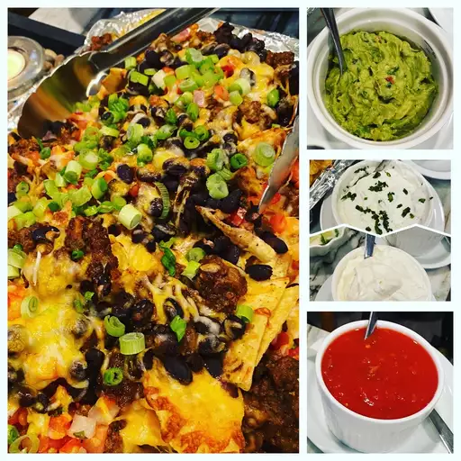

Amazing Nachos!

Description
These homemade nachos are great for game day. This recipe makes a huge meal-sized tray of nachos with lots of good stuff! You can adjust ingredient quantities to suit your preference. Serve with extra chips if required.
Ingredients:
- aluminum foil
- 1 pound ground beef
- 3/4 cup water
- 1(1.25 ounce) package taco seasoning mix
- 1(18 ounce) package style restaurant-style tortilla chips
- 1 cup salsa
- 1 cup sour cream, or more to taste
- 4 green onions, diced
- 1(4 ounce) can sliced jalapeno peppers, drained